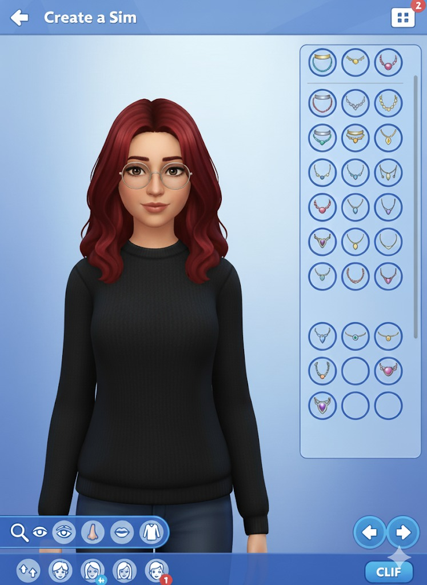

Realidad Nacional

Anghi Tatiana Chuquimez Castro
Mi nombre es Anghi, en mis ratos libres me gusta ver series o películas, escuchar música y leer. Actualmente estoy cursando mi segundo año de Medicina Humana, por lo que nunca se sabe si mi próxima lectura será algo relacionado con la fisiología o un romance con mucho drama. Creo que esa mezcla describe bastante bien cómo soy: entre lo académico y lo soñador, siempre buscando un balance. También disfruto dibujar y pasar tiempo con mis mascotas(2 gatas y una perrita), lo que en la práctica se resume a mí intentando que no se peleen la mayoría del tiempo.